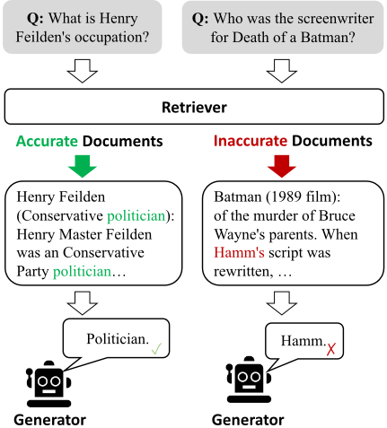
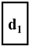
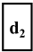
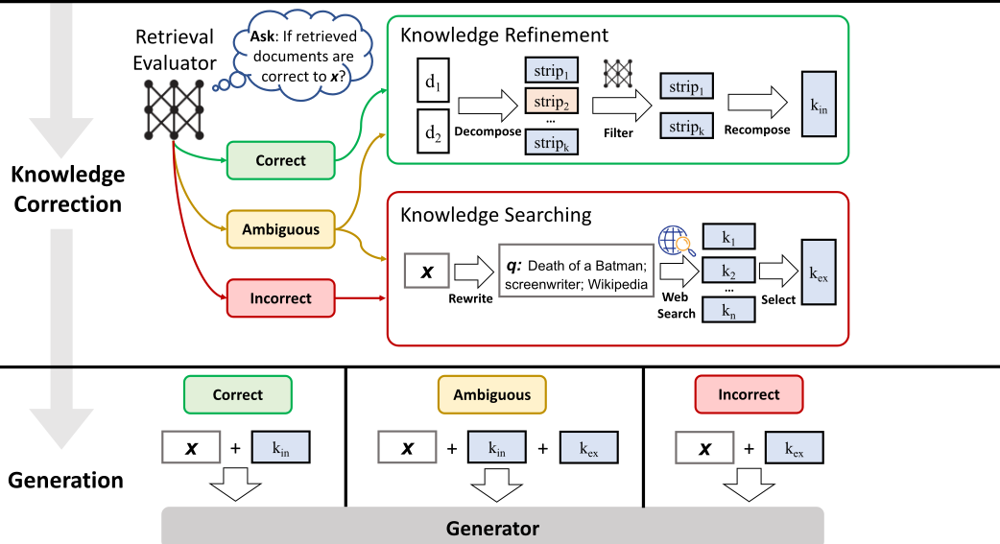
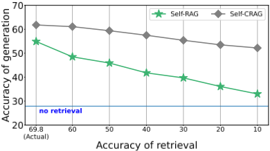

纠错式检索增强生成（Corrective Retrieval Augmented Generation, CRAG）
RAG 的效果高度依赖检索文档的相关性，一旦检索返回低质量结果，无关信息会误导生成并加剧幻觉。论文提出 CRAG：用微调的轻量 T5 检索评估器（0.77B）对每个问题-文档对打相关性分，按置信度阈值触发 Correct/Incorrect/Ambiguous 三种动作——判定相关时用 decompose-then-recompose 算法把文档拆成知识条、过滤后重组，判定不相关时丢弃检索结果、由 ChatGPT 改写查询后调用 Web 搜索补充外部知识，模糊时两者结合。CRAG 即插即用，可直接叠加在 RAG、Self-RAG 等方法上。在 PopQA、Biography、PubHealth、Arc-Challenge 四个数据集上，CRAG 显著超越基线（如基于 SelfRAG-LLaMA2-7b 时较 RAG 在 PubHealth 提升 36.6% accuracy），且轻量评估器的相关性判断在所有设置下优于 ChatGPT，仅以 modest 计算开销换来对低质量检索的更强鲁棒性。对以知识库问答等 RAG 管线为核心场景的团队，这是检索可靠性加固的直接参考。
RAG 的有效性高度依赖检索文档的相关性与准确性，而传统 RAG 不加甄别地把检索到的完整文档拼入上下文；当检索返回无关或错误结果时，会阻碍模型获取准确知识、甚至加剧幻觉。论文研究'检索出错时怎么办'，即如何对检索结果进行自纠错以提升生成鲁棒性。
提出 CRAG：先用微调的轻量 T5-large（0.77B）检索评估器对每个问题-文档对打相关性分（-1 到 1），按上下阈值汇总为 Correct/Incorrect/Ambiguous 三种动作。Correct 时执行 decompose-then-recompose 知识精炼：把文档切成知识条、用同一评估器过滤无关条并按序重组为 internal knowledge；Incorrect 时丢弃检索结果，用 ChatGPT 把问题改写为关键词查询、调用 Google Search API（优先 Wikipedia 页面）获取 external knowledge 并做同样精炼；Ambiguous 时合并两者。整个模块即插即用，可叠加在 RAG、Self-RAG 等任意 RAG 管线与任意生成 LLM 上，无需对生成器做指令微调。
基于 SelfRAG-LLaMA2-7b 时，CRAG 较 RAG 在 PopQA 提升 7.0% accuracy、Biography 提升 14.9% FactScore、PubHealth 提升 36.6% accuracy、Arc-Challenge 提升 15.4% accuracy；基于 LLaMA2-hf-7b 时在 PopQA 提升 4.4%、Biography 提升 2.8%、Arc-Challenge 提升 10.3%
Self-CRAG 较 Self-RAG：基于 LLaMA2-hf-7b 在 PopQA 提升 20.0% accuracy、Biography 提升 36.9% FactScore、Arc-Challenge 提升 4.0% accuracy；基于 SelfRAG-LLaMA2-7b 在 PopQA 提升 6.9%、Biography 提升 5.0%、PubHealth 提升 2.4%
轻量 T5 检索评估器（0.77B）在 PopQA 上对检索结果质量的判断准确率在所有设置（direct/CoT/few-shot 提示）下显著优于 ChatGPT
随检索性能人为下降，Self-CRAG 的生成性能下降幅度小于 Self-RAG，显示对低质量检索更鲁棒
消融实验显示移除任一动作或任一知识利用操作（文档精炼、查询改写、外部知识选择）均导致性能下降
持续补充 Web 搜索知识的提升有限，而加入自纠错机制后在所有情况下显著优于仅补充 Web 知识，证明提升主要来自自纠错机制而非额外信息量
计算开销分析显示自纠错机制仅带来 modest 开销（论文给出 FLOPs per token 与每实例执行时间估计，仅覆盖生成阶段）
与关注'是否需要检索'或'把检索当工具增强生成'的 Self-RAG、SAIL、Toolformer 等工作不同，本文首次针对'检索返回不准确结果'的场景设计纠错策略；相比 Self-RAG 需指令微调 LLaMA-2（7B）critic 模型且要求生成器学会输出 critic tokens，CRAG 用 0.77B 轻量评估器、对生成器无任何微调要求，可自由更换底层 LLM 而性能保持竞争力。
相关度级别：high
命中能力域：3.1 上下文工程与记忆 | 3.5 评测与可靠使用
理由：论文直接命中 3.1 的核心技术：RAG/检索增强与上下文的精炼组织（decompose-then-recompose 过滤无关片段、Web 搜索扩展上下文来源）；同时命中 3.5：专门研究检索失败场景下的生成鲁棒性、评估器准确率评测与计算开销分析。团队的知识库问答、文档与测试辅助等场景都建立在 RAG 管线上，'检索质量评估→动作触发→外部搜索兜底'是可直接复用的可靠性加固模式；用轻量微调模型替代 LLM-as-judge 做相关性判断也契合团队对成本与效率的关注。
建议动作：深入精读并做内部分享
arXiv:2401.15884v3 [cs.CL] 2024年10月7日
Shi-Qi Yan 1 * , Jia-Chen Gu 2 * , Yun Zhu 3 , Zhen-Hua Ling 1 1 National Engineering Research Center of Speech and Language Information Processing, University of Science and Technology of China, Hefei, China 2 Department of Computer Science, University of California, Los Angeles
3
Google DeepMind
gujc@ucla.edu
yansiki@mail.ustc.edu.cn
Abstract
Large language models
(LLMs)
yunzhu@google.com
inevitably
exhibit hallucinations since the accuracy of
generated texts cannot be secured solely by
the parametric knowledge they encapsulate. Al-
though retrieval-augmented generation (RAG)
is a practicable complement to LLMs, it relies
heavily on the relevance of retrieved docu-
ments, raising concerns about how the model
behaves if retrieval goes wrong. To this end, we
propose the
C
orrective
R
G
etrieval
A
ugmented
eneration (CRAG) to improve the robustness
of generation.
Specifically,
lightweight
retrieval evaluator is designed to assess the
overall quality of retrieved documents for a
query, returning
confidence degree based
on which different knowledge retrieval ac-
tions can be triggered.
Since retrieval from
static and limited corpora can only return sub-
optimal documents, large-scale web searches
are utilized as an extension for augmenting the
retrieval results.
Besides, a decompose-then-
recompose algorithm is designed for retrieved
documents to selectively focus on key infor-
mation and filter out irrelevant information in
them.
CRAG is plug-and-play and can be
seamlessly coupled with various RAG-based
approaches.
Experiments on four datasets
covering short- and long-form generation tasks
show that CRAG can significantly improve the
performance of RAG-based approaches.
Introduction
Large language models (LLMs) have attracted
increasing attention and exhibited impressive abili-
ties to understand instructions and generate fluent
language texts (Brown et al., 2020; Ouyang et al.,
* Equal contribution.
1 The code is available at github.com/HuskyInSalt/CRAG
zhling@ustc.edu.cn

the parametric knowledge they encapsulate (Zhang et al., 2023b; Muhlgay et al., 2023).
检索文档 先前的研究已引入检索技术，以纳入与输入相关的知识并增强生成，检索增强生成（Retrieval-Augmented Generation, RAG）（Lewis et al., 2020）即为典型示例。在该框架中，通过将从外部知识语料库中检索到的相关文档前置到输入之前来增强模型输入（Guu et al., 2020）。尽管 RAG 是大语言模型（LLMs）的一种可行补充，但其有效性取决于所检索文档的相关性和准确性（Li et al., 2022; Tan et al., 2022）。生成过程对检索知识的严重依赖，引发了人们对模型在检索可能失败或返回不准确结果的场景下行为与性能的重大担忧（Shi et al., 2023）。如图 1 所示，低质量的检索器容易引入大量无关信息，阻碍模型获取准确知识，并可能对其造成误导，从而导致幻觉等问题（Zhang et al., 2023b）。然而，大多数传统的 RAG 方法不加区分地纳入检索到的文档，而不论这些文档是否相关（Rony et al., 2022）。此外，当前方法在检索和利用阶段大多将完整文档作为参考知识。但这些检索到的文档中相当一部分文本通常对生成而言并非必需，本不应在 RAG 中被同等参考和涉及。
针对上述问题，本文专门研究了检索器返回不准确结果的场景，并提出了一种名为纠错检索增强生成（Corrective Retrieval Augmented Generation, CRAG）的方法，用于对检索器的结果进行自我纠正，并提高文档在增强生成中的利用率。我们设计了一个轻量级的检索评估器，用于评估针对某一查询所检索文档的整体质量。该评估器是检索增强生成（RAG）中的关键组件，通过审查和评估所检索文档的相关性与可靠性，为信息丰富的生成提供支持。在此基础上量化得到一个置信度，据此可以触发 {Correct, Incorrect, Ambiguous} 三种不同的知识检索动作。对于后两种动作，本文将大规模网络搜索（Piktus et al., 2021; Komeili et al., 2022）作为策略性扩展加以集成，因为从静态且有限的语料库中检索，在范围和多样性方面只能返回次优的文档。实施这一增强是为了拓宽所检索信息的覆盖面，利用网络广泛而动态的特性来补充和丰富最初获得的文档。此外，为了消除所检索文档中包含的对 RAG 无益的冗余上下文，本文在整个检索与利用过程中精心设计了一种“先分解再重组”（decompose-then-recompose）算法。该算法确保对检索到的信息进行精炼，优化关键见解的提取，并最大限度地减少非必要内容的纳入，从而提高检索数据的利用率。
CRAG 具有即插即用的特性，我们在实验中将其实现于 RAG（Lewis et al., 2020）和 Self-RAG（Asai et al., 2024）中，以展示其对基于 RAG 的方法的适应性。在 PopQA（Mallen et al., 2023）、Biography（Min et al., 2023）、Pub Health（Zhang et al., 2023a）和 Arc-Challenge（Bhakthavatsalam et al., 2021）四个数据集上的结果表明，CRAG 能够显著提升标准 RAG 与最先进的 Self-RAG 的性能，证明了其在短文本和长文本生成任务上的泛化能力。为便于他人复现我们的结果，我们将在后续发布全部源代码。
综上所述，本文的贡献主要有三个方面：1）本文研究了检索器返回不准确结果的场景，并且据我们所知，首次尝试为 RAG 设计纠错策略以提升其鲁棒性。2）提出了一种名为 CRAG 的即插即用方法，以提升自动自我纠正的能力以及对所检索文档的高效利用。3）大量实验结果充分证明了 CRAG 对基于 RAG 的方法的适应性，以及其在短文本和长文本生成任务上的泛化能力。
大语言模型（LLMs）的幻觉 尽管 LLMs 在理解指令和生成流畅的语言文本方面已展现出令人印象深刻的能力（Bang et al., 2023; Qin et al., 2023; Zhong et al., 2023），但 LLMs 仍在艰难应对的最严重问题之一便是幻觉。正如许多研究所发现的（Tonmoy et al., 2024; Zhang et al., 2023b; Shuster et al., 2021），无论是过时的信息还是被激活的错误知识，都会严重导致幻觉。大规模缺乏监管的训练数据收集、高质量采样数据占比偏低、输入空间中数据分配的不完善，以及许多其他现实因素都可能影响 LLMs 并加剧这些问题。因此，显而易见，缺乏准确且具体的知识会导致误导性甚至不准确的生成，而这在大多数实际应用中会严重损害用户体验。
检索增强生成（RAG） RAG（Lewis et al., 2020; Guu et al., 2020）被视为解决上述问题的一种有效方法，它利用检索到的文档来增强生成式语言模型（LMs）的输入问题。它通常从特定语料库（例如 Wikipedia）中提供额外的知识来源，从而显著提升 LMs 在多种任务上的性能，尤其是在知识密集型任务中。所提出的方法通常利用信息检索为生成式 LLMs 提供包含相关知识的文档。早期研究在专注于响应生成的预训练语言模型前端采用稀疏检索器或稠密检索器。尽管如此，上述方法通常忽略了一个问题：如果检索出错会怎样？因为引入检索的目的在于确保生成式 LMs 能够获得相关且准确的知识。如果检索到的文档不相关，检索系统甚至可能加剧 LMs 产生的事实性错误。
高级 RAG 近年来，许多先进方法在原始 RAG 的基础上发展而来（Zhang et al., 2024; Kim et al., 2024; Wang et al., 2024; Liu et al., 2024）。考虑到对于某些查询而言检索有时并非必要，相反，在许多情况下不进行检索的回答甚至更加准确。SelfRAG（Asai et al., 2024）被提出用于选择性地检索知识，并引入评判模型（critic model）来决定是否进行检索。Yoran et al. (2024) 设计了一个自然语言推理（NLI）模型来识别不相关的上下文并提升鲁棒性。SAIL（Luo et al., 2023）通过指令微调，将检索到的文档插入到指令之前。而 Toolformer（Schick et al., 2023）则经过预训练以调用诸如 Wikipedia 之类的 API。此外，在一些长文本生成任务中，外部知识需要被多次使用，因此何时进行检索也应当被关注。Jiang et al. (2023) 在长文本生成中主动预判未来内容，并决定何时检索以及检索什么。
与我们工作最相关的近期研究（Schick et al., 2023; Luo et al., 2023; Asai et al., 2024）相比，需要强调一个主要区别。这些方法旨在将检索作为一种有用的工具来增强生成，或探讨检索是否必要，而本研究特别研究了检索器返回不准确结果的场景。据我们所知，本文首次尝试为 RAG 探索并设计纠错策略，以提升其生成的鲁棒性。
遵循先前的工作（Lewis et al., 2020; Asai et al., 2024），给定输入 X 和一个包含大量知识文档的可访问语料库 C = { d 1 , ..., d N }，系统被期望生成输出 Y。整个框架通常划分为检索器 R 和生成器 G。检索器 R 旨在从语料库 C 中检索与输入 X 相关的 topK 个文档 D = { d r 1 , ..., d r k }。基于输入 X 和检索到的结果 D，生成器 G 负责生成输出 Y。该框架可以形式化为：
这表明检索器与生成器无缝耦合，风险容忍度较低。任何不成功的检索都可能导致不令人满意的响应，无论生成器的能力多么出色。这正是本文的关注点所在，即提升生成的鲁棒性。
图 2 和算法 1 给出了 CRAG 在推理阶段的概览，其设计了纠正策略以提升生成的鲁棒性。给定输入查询以及来自任意检索器的检索文档，构建一个轻量级检索评估器来估计检索文档与输入查询之间的相关性得分（第 4.2 节）。该相关性得分被量化为总共三种置信程度，进而触发相应的动作：{ Correct , Incorrect , Ambiguous }（第 4.3 节）。如果触发了 Correct 动作，检索到的文档将被精炼为更精确的知识条带。这一精炼操作涉及知识分解、过滤和重组（第 4.4 节）。如果触发了 Incorrect 动作，检索到的文档将被丢弃。取而代之的是诉诸网络搜索，并将其视为用于纠正的补充知识来源（第 4.5 节）。最终，当无法有把握地做出正确或不正确的判断时，将触发一种结合两者的柔和且平衡的动作 Ambiguous。在优化检索结果之后，可以采用任意的生成模型。
在使用检索到的文档之前，很自然会想知道它们是否准确，这一点意义重大，因为通过这种方式可以识别出不相关或具有误导性的信息。检索评估器的准确性无疑在塑造整体系统性能方面发挥着举足轻重的作用，因为它会影响后续处理过程的结果。
x ：《蝙蝠侠之死》的编剧是谁？
检索到的文档



我们的目标是在检索到的文档不相关时对其进行纠正。具体而言，我们采用 T5-large（Raffel et al., 2020）来初始化检索评估器，并对其进行微调。它的参数规模远小于当前大多数 LLM（Touvron et al., 2023a,b; Chowdhery et al., 2023; Anil et al., 2023; Brown et al., 2020; Ouyang et al., 2022; OpenAI, 2023）。为确保所有实验结果可与 Self-RAG（Asai et al., 2024）相比较，我们的实验还采用了由 Self-RAG 提供的、通过 Contriever（Izacard et al., 2022）获得的相同检索结果。用于微调评估器的相关性信号可以从现有数据集中收集。例如，PopQA（Mallen et al., 2023）为每个问题提供了来自维基百科的黄金主体维基标题。我们可以利用它来追踪到一条并非 100% 相关但质量相当高的段落。我们将其用作微调检索评估器的相关性信号。2 另一方面，用于微调的负样本全部从检索结果中随机采样得到，它们与输入查询相当相似但并不相关。关于这一微调步骤的更多细节可参见附录 B.3。对于每个问题，通常会检索出 10 篇文档。将问题与每篇单独的文档拼接起来作为输入，评估器逐一为每个问题-文档对预测相关性分数。我们还尝试提示 ChatGPT 来识别检索相关性以作对比，但如第 5.5 节所述，其表现不佳。基于这些计算得到的相关性分数，最终会就是否检索正确做出判断，并关联相应的动作触发。在我们提出的框架中，检索质量的评估成本相对较低，无需访问庞大而昂贵的 LLM。与 Self-RAG（Asai et al., 2024）采用指令微调 LLaMA-2（7B）的评论模型相比，CRAG 中设计的评估器展现出相当轻量（0.77B）的优势。
2 https://huggingface.co/datasets/akariasai/PopQA
依赖（Require）：E（检索评估器），W（查询重写器），G（生成器）
输入：x（输入问题），D = { d 1 , d 2 , ..., d k }（检索到的文档）
输出：y（生成的回答）
1 score i = E 评估每一对 ( x , d i ) 的相关性，d i ∈ D
2 Confidence = 基于 { score 1 , score 2 , ...score k } 计算并给出最终判断
// Confidence 有 3 种可选取值：[CORRECT]、[INCORRECT] 或 [AMBIGUOUS]
3 if Confidence == [CORRECT] then
4 Internal_Knowledge = Knowledge_Refine( x , D )
5 k = Internal_Knowledge
6 else if Confidence == [INCORRECT] then
7 External_Knowledge = Web_Search( W 重写 x 以用于搜索)
8 k = External_Knowledge
9 else if Confidence == [AMBIGUOUS] then
10 Internal_Knowledge = Knowledge_Refine( x , D )
11 External_Knowledge = Web_Search( W 重写 x 以用于搜索)
12 k = Internal_Knowledge + External_Knowledge
13 end
14 G 在给定 x 和 k 的情况下预测 y
为了纠正不相关的文档并按需精炼目标文档，应当有区别地执行动作。基于前文所述的每个检索文档的置信度分数，设计了三种类型的动作，并通过设置上阈值和下阈值来相应触发。如果置信度分数高于上阈值，则该检索文档被识别为 Correct；如果低于下阈值，则被识别为 Incorrect。否则，将执行一种更柔和的中间动作，即 Ambiguous。每个检索文档都被单独处理，并最终进行整合。
Correct 在此，当至少一个检索文档的置信度分数高于上阈值时，该检索被判定为 Correct。如果是这样，则意味着检索结果中存在相关文档，来自检索结果的知识应当更加可靠和准确。然而，即使能够找到相关文档，该文档中也不可避免地存在一些带噪声的知识条带。为了提取该文档中最关键的知识条带，我们进一步设计了一种知识精炼方法，该方法将在 4.4 节中详细阐述。
Incorrect 此外，当所有检索文档的置信度分数均低于下阈值时，该检索被判定为 Incorrect。这表明所有检索文档都被认为是不相关的，对生成没有帮助。一旦来自检索结果的知识被判定为不准确，仍然固守其中是不明智的，这很可能导致捏造的事实。因此，我们需要寻找新的知识来源来进行纠正。这里引入了网络搜索，从互联网上进行搜索，如 4.5 节所述。这一纠正动作有助于克服无法参考到可靠知识的尴尬挑战。
Ambiguous 除上述两种情况外，其余情况将被分配给一种中间动作 Ambiguous。这通常发生在检索的准确性难以区分、评估器给出中间分数的情况下。由于检索评估器对其判断缺乏信心，Correct 和 Incorrect 两种类型的处理后知识被结合起来以相互补充。实施这种调节性、柔和的策略可以显著增强系统的鲁棒性和韧性，从而培育出一个更具适应性、能够实现最优性能的框架。
讨论 仅采用 Correct 和 Incorrect 动作的初步实验表明，纠错检索增强生成（CRAG）的效果容易受到检索评估器准确性的影响。原因可能在于对所有输入案例都进行了截然不同的知识切换，而不论其判断的置信程度如何。Ambiguous 动作的设计显著有助于减轻对检索评估器准确性的依赖。
给定一篇检索到的相关文档，我们设计了一种先分解再重组（decompose-then-recompose）的知识精炼方法，以进一步提取其中最关键的知识条带（knowledge strips）。为了获得细粒度的检索结果，我们将检索到的结果分割为内部条带。如果某个检索结果短至一两句话，则将其视为单独的条带；否则，需要根据总长度将检索文档拆分为更小的单元，这些单元通常由几句话组成。假设该尺度下包含一条独立的信息，过滤操作即基于这些分段进行。随后，采用第4.2节中微调得到的检索评估器来计算每个知识条带的相关性得分。基于这些得分，不相关的知识条带被过滤掉，而相关的知识条带则按顺序通过拼接重新组合，即内部知识（internal knowledge）。
如果系统能够自行判断其现有知识语料库无法很好地解决问题，并转而寻求额外的外部知识帮助，那将更加智能。相反，即使系统明知现有知识无法解决问题，却仍然固守有限的知识语料库，最终只会给出编造的事实，这被称为幻觉（hallucination）。因此，当检索到的结果都被假定为不相关时，寻求互补的外部知识就极为重要；我们认为，一个知道自己不知道什么、无法回答什么的系统，比一个固守有限知识、无力寻求外部知识的系统更加智能。由于从静态且有限的语料库中检索只能在范围和多样性方面返回次优的文档，因此将大规模网络搜索（Piktus et al., 2021; Komeili et al., 2022）作为 RAG 的战略性扩展加以集成。具体而言，输入由 ChatGPT 改写为由关键词组成的查询，以模拟搜索引擎的日常使用方式。用于改写的提示（prompt）如附录 A 所示。在 CRAG 中，采用公开且可访问的商业网络搜索 API 为每个查询生成一系列 URL 链接。3 考虑到来自大规模网络搜索的知识可能引入偏差或不可靠的信息，我们优先选择像维基百科（Wikipedia）这样权威且受监管的网页，这可以显著帮助缓解这些问题。此外，我们利用这些 URL 链接访问相应网页并转录其内容，并采用与第 4.4 节相同的知识精炼方法来获得相关的网络知识，即外部知识（external knowledge）。
我们开展了大量实验，以充分展示 CRAG 对基于 RAG 的方法的适应性，以及其在短文本和长文本生成任务上的泛化能力。
CRAG 在四个数据集上进行了评估，包括 PopQA（Mallen et al., 2023）（短文本生成）、Biography（Min et al., 2023）（长文本生成）、PubHealth（Zhang et al., 2023a）（判断题）以及 Arc-Challenge（Bhakthavatsalam et al., 2021）（多项选择题）。遵循先前的工作，PopQA、PubHealth 和 Arc-Challenge 采用准确率作为评估指标。Biography 采用 FactScore（Min et al., 2023）作为评估指标。读者可参阅附录 B.1 了解更多细节。使用相同指标的原因在于，我们提出的方法与先前的研究具有可比性，因为我们使用了与先前工作相同的检索结果。不同之处在于，我们的动机是通过纠正系统判定为低质量的检索结果来提升检索质量。这可以类比为 RAG 对独立参数化语言模型的增强，而我们则进一步用纠正策略来增强 RAG。
我们主要将 CRAG 与有检索和无检索两类方法进行了比较，其中后者可进一步分为标准 RAG 和最新的先进 RAG，包括：
无检索基线。我们评估了一些公开的大语言模型（LLM），包括 LLaMA2-7B、13B（Touvron et al., 2023b），指令微调模型 Alpaca-7B、13B（Dubois et al., 2023），以及 CoVE 65B（Dhuliawala et al., 2024），后者引入迭代式工程来提升 LLM 生成结果的事实性。我们还纳入了 LLaMA2-chat 13B 和 ChatGPT 等专有 LLM。
3 在本研究中，使用 Google Search API 进行搜索。
| Method. | PopQA (Accuracy).LMs trained with propriety data | Bio (FactScore).LMs trained with propriety data | Pub (Accuracy).LMs trained with propriety data | ARC (Accuracy). |
|---|---|---|---|---|
| LLaMA2-c 13 B | 20.0 | 55.9 | 49.4 | 38.4 |
| Ret-LLaMA2-c 13 B | 51.8 | 79.9 | 52.1 | 37.9 |
| ChatGPT | 29.3 | 71.8 | 70.1 | 75.3 |
| Ret-ChatGPT | 50.8 | - | 54.7 | 75.3 |
| Perplexity.ai | - | 71.2 | - | - |
| Baselines without retrieval | Baselines without retrieval | Baselines without retrieval | ||
| LLaMA2 7 B | 14.7 | 44.5 | 34.2 | 21.8 |
| Alpaca 7 B | 23.6 | 45.8 | 49.8 | 45.0 |
| LLaMA2 13 B | 14.7 | 53.4 | 29.4 | 29.4 |
| Alpaca 13 B | 24.4 | 50.2 | 55.5 | 54.9 |
| CoVE 65 B | - | 71.2 | - | - |
| Baselines with retrieval | Baselines with retrieval | Baselines with retrieval | ||
| LLaMA2 7 B | 38.2 | 78.0 | 30.0 | 48.0 |
| Alpaca 7 B | 46.7 | 76.6 | 40.2 | 48.0 |
| SAIL | - | - | 69.2 | 48.4 |
| LLaMA2 13 B | 45.7 | 77.5 | 30.2 | 26.0 |
| Alpaca 13 B | 46.1 | 77.7 | 51.1 | 57.6 |
| LLaMA2-hf-7b | LLaMA2-hf-7b | LLaMA2-hf-7b | LLaMA2-hf-7b | |
| RAG | 50.5 | 44.9 | 48.9 | 43.4 |
| CRAG | 54.9 | 47.7 | 59.5 | 53.7 |
| Self-RAG* | 29.0 | 32.2 | 0.7 | 23.9 |
| Self-CRAG | 49.0 | 69.1 | 0.6 | 27.9 |
| SelfRAG-LLaMA2-7b | SelfRAG-LLaMA2-7b | SelfRAG-LLaMA2-7b | ||
| RAG | 52.8 | 59.2 | 39.0 | 53.2 |
| CRAG | 59.8 | 74.1 | 75.6 | 68.6 |
| Self-RAG | 54.9 | 81.2 | 72.4 | 67.3 |
| Self-CRAG | 61.8 | 86.2 | 74.8 | 67.2 |
| Method. | PopQA (Accuracy).LMs trained with propriety data | Bio (FactScore).LMs trained with propriety data | Pub (Accuracy).LMs trained with propriety data | ARC (Accuracy). |
标准 RAG。我们评估了标准 RAG（Lewis et al., 2020），其中 LM 根据前置了检索到的排名靠前文档的查询生成输出，所使用的检索器与我们的系统相同。这里我们采用了多个公开的指令微调 LLM，包括 LLaMA2-7B、13B（Touvron et al., 2023b）、Alpaca-7B、13B（Dubois et al., 2023），以及在 Self-RAG（Asai et al., 2024）中经过指令微调的 LLaMA2-7B。
先进 RAG。（1）SAIL（Luo et al., 2023），该方法在 Alpaca 指令微调数据上对 LM 进行指令微调，并将检索到的排名靠前的文档插入到指令之前。（2）Self-RAG（Asai et al., 2024），该方法在包含多组反思标记（reflection tokens）的指令微调数据上对 LLaMA2 进行微调，这些标记由 GPT-4（OpenAI, 2023）标注。（3）遵循 Asai et al.（2024），我们还引用了使用私有数据训练的检索增强基线的结果：Ret-ChatGPT 和 RetLLaMA-chat，它们采用了与上述相同的增强技术；以及 perplexity.ai，一个基于 InstructGPT 的生产级搜索系统。
表 1 展示了在四个数据集上的结果。将所提出方法与标准 RAG 耦合的模型命名为 CRAG，与 SelfRAG 耦合的模型命名为 Self-CRAG。读者可参阅附录 B.3 了解我们所提方法的更多实现细节。从这些结果中，我们可以得出以下发现：
LLaMA2-hf-7b SelfRAG-LLaMA2-7b
首先，所提出的方法能够显著提升 RAG 和 Self-RAG 的性能。具体而言，如表 1 所示，当基于 SelfRAG-LLaMA2-7b 时，CRAG 在 PopQA 上的准确率比 RAG 高出 7.0%，在 Biography 上的 FactScore 高出 14.9%，在 PubHealth 上的准确率高出 36.6%，在 Arc-Challenge 上的准确率高出 15.4%；当基于 LLaMA2-hf-7b 时，CRAG 在 PopQA 上的准确率比 RAG 高出 4.4%，在 Biography 上的 FactScore 高出 2.8%，在 Arc-Challenge 上高出 10.3%。与当前最先进的 Self-RAG 相比，当基于 LLaMA2-hf-7b 时，Self-CRAG 在 PopQA 上的准确率比其高出 20.0%，在 Biography 上的 FactScore 高出 36.9%，在 Arc-Challenge 上的准确率高出 4.0%；当基于 SelfRAG-LLaMA2-7b 时，Self-CRAG 在 PopQA 上的准确率比其高出 6.9%，在 Biography 上的 FactScore 高出 5.0%，在 PubHealth 上的准确率高出 2.4%。这些结果证明了 CRAG 的适配性——它是即插即用的，可以嵌入到基于 RAG 的方法中。
其次，所提出的方法在多种生成任务上展现出了很强的泛化能力。特别地，表 1 中报告的这些基准测试分别代表了不同的实际场景，包括短文本实体生成（PopQA）、长文本生成（Biography）以及闭集任务（PubHealth、Arc-Challenge）。这些结果验证了 CRAG 的一致有效性。它在一系列任务上的通用性凸显了其强大的能力和跨多样场景的泛化性。
第三，所提出的方法在更换底层 LLM 生成器方面表现出更大的灵活性。可以看出，当底层 LLM 从 SelfRAG-LLaMA2-7b 更换为 LLaMA2-hf-7b 时，CRAG 仍然展现出有竞争力的性能，而 SelfRAG 的性能则显著下降，甚至在若干基准测试上不及标准 RAG。造成这些结果的原因在于，Self-RAG 需要使用人工或 LLM 标注的数据进行指令微调，以学会按需输出特殊的评论标记（critic tokens），而常见的 LLM 并未学习这种能力。CRAG 对这种能力没有任何要求。可以想见，当未来出现更先进的 LLM 时，它们可以轻松地与 CRAG 耦合，而 Self-RAG 仍需要额外的指令微调。
| 0 | 1 | 2 |
|---|---|---|
| CRAG | 54.9 | 59.8 |
| w/o. Correct | 53.2 | 58.3 |
| w/o. Incorrect | 54.4 | 59.5 |
| w/o. Ambiguous | 54 | 59 |
| Self-CRAG | 49 | 61.8 |
| w/o. Correct | 43.6 | 59.6 |
| w/o. Incorrect | 47.7 | 60.8 |
| w/o. Ambiguous | 48.1 | 61.5 |
| 0 | 1 | 2 |
| LLaMA2-hf-7b | SelfRAG-LLaMA2-7b | |
|---|---|---|
| CRAG | 54.9 | 59.8 |
| w/o. refinement | 49.8 | 54.2 |
| w/o. rewriting | 51.7 | 56.2 |
| w/o. selection | 50.9 | 58.6 |
| Self-CRAG | 49 | 61.8 |
| w/o. refinement | 35.9 | 52.2 |
| w/o. rewriting | 37.2 | 58.4 |
| w/o. selection | 24.9 | 57.9 |
| | LLaMA2-hf-7b | SelfRAG-LLaMA2-7b |
The impact of each triggered action. To further verify the effectiveness of triggered actions designed in the retrieval evaluator, ablation tests for removing each single action in the proposed method were conducted as shown in Table 2. Evaluations on the PopQA dataset were conducted to demonstrate the performance change in terms of accuracy. Specifically, when the action Correct or Incorrect was removed, it was merged with Ambiguous so that the proportion that originally triggered Correct or Incorrect would trigger Ambiguous . On the other hand, when the action Ambiguous was removed, there was only one threshold against which all input queries clearly triggered Correct or Incorrect . From these results, it can be seen that there was a performance drop no matter which action was removed, illustrating that each action contributed to improving the robustness of generation. To further illustrate the study, experiments are also conducted by triggering only one action once, and the results shown in the appendix also prove the consistency.
| Accuracy | |
|---|---|
| Our Retrieval Evaluator (T5-based) | 84.3 |
| ChatGPT | 58 |
| ChatGPT-CoT | 62.4 |
| ChatGPT-few-shot | 64.7 |
| | Accuracy |
The impact of each knowledge utilization operation. Table 3 illustrated how the performance changed if a key knowledge utilization operation was ablated. Evaluations on the PopQA dataset in terms of accuracy were conducted by individually removing the knowledge utilization operations of document refinement, search query rewriting, and external knowledge selection. Removing document refinement denoted that the original retrieved documents were directly fed to the following generator, as in most existing works. Additionally, removing search query rewriting denoted that questions were not rewritten into queries consisting of keywords during knowledge searching. Eventually, removing knowledge selection denoted that all searched content of web pages was all regarded as the external knowledge without selection. These results help derive the findings that the performance of the final system degraded no matter which knowledge utilization operation was removed, revealing that each knowledge utilization operation contributed to improving the utilization of knowledge.
检索评估器（retrieval evaluator）的质量在很大程度上决定了整个系统的性能。给定文档检索结果，我们评估了检索评估器能否准确判断这些结果的整体质量。我们的检索评估器与商用大语言模型（LLM）ChatGPT 在 PopQA 数据集上针对文档检索结果的评估准确率如表 4 所示。我们实验中使用的 ChatGPT、ChatGPT-CoT 和 ChatGPT-few-shot 的提示词可参见附录 A。结果表明，基于 T5 的轻量级检索评估器在所有设置下均显著优于颇具竞争力的 ChatGPT。
为进一步验证所提出方法对检索性能的鲁棒性，我们研究了在不同检索性能条件下生成性能的变化情况。我们随机故意移除了一部分准确的检索结果，以模拟低质量检索器并评估性能如何变化。图 3 展示了 Self-RAG 和 Self-CRAG 在 PopQA 数据集上的性能变化。可以看出，随着检索性能的下降，Self-RAG 和 Self-CRAG 的生成性能也随之下降，这表明生成器严重依赖于检索器的质量。此外，随着检索性能的下降，Self-CRAG 的生成性能下降幅度比 Self-RAG 更小。这些结果表明，Self-CRAG 在增强对检索性能的鲁棒性方面优于 Self-RAG。

| LLaMA2-hf-7b | SelfRAG-LLaMA2-7b | |
|---|---|---|
| PopQA | ||
| CRAG | 54.9 | 59.8 |
| RAG | 50.5 | 52.8 |
| RAG w. web | 52.2 | 53.8 |
| Self-CRAG | 49 | 61.8 |
| Self-RAG | 29 | 54.9 |
| Self-RAG w. web | 24.9 | 57.9 |
| | LLaMA2-hf-7b | SelfRAG-LLaMA2-7b |
This paper highlights the necessity of enhancing the retrieved context by incorporating additional information when the initial retrieval results are irrelevant and unreliable. Meanwhile, it is also crucial to confirm that the primary improvements in our method stem from the self-correction mech- Table 6: computational overhead assessment of RAG, CRAG, Self-CRAG, and Self-RAG about FLOPs per token on GPUs and executing time per instance. The upper bound of Self-CRAG is lower because only three passages are provided as input (correct, incorrect and ambiguous content). All the data in the table only represents a rough estimate of the generation phase, the retrieval and data-processing stages are not included.
| TFLOPs per token | executing time(s) | |
|---|---|---|
| RAG | 26.5 | 0.363 |
| CRAG | 27.2 | 0.512 |
| Self-RAG | 26.5 ∼ 132.4 | 0.741 |
| Self-CRAG | 27.2 ∼ 80.2 | 0.908 |
| | TFLOPs per token | executing time(s) |
anism, rather than solely from the supplementary information obtained through web searches. To further demonstrate the effectiveness of the proposed self-correction mechanism, both RAG and Self-RAG were consistently supplemented with web search knowledge to ensure they had access to the same scope of the retrieved knowledge. The results in Table 5 show that consistently supplementing RAG or Self-RAG with web search knowledge can improve the performance in most cases (except Self-RAG w. web using the original LLaMA2 model), though the improvement remains limited. Furthermore, augmenting RAG or SelfRAG with the proposed self-correction mechanism significantly outperformed the models consistently supplemented with web search knowledge in all cases. This finding confirms that the observed advancements are primarily attributable to the proposed self-correction mechanism.
为了说明我们的自校正机制能够作为适用于各种基于 RAG 的框架的轻量级、即插即用解决方案，我们测量了计算开销。我们采用了 Narayanan et al. (2021) 中的 FLOPs 预测公式，结果呈现在表 6 中，该表展示了 GPU 上每个 token 的预测 FLOPs。由于 Self-RAG 具有自适应性，会根据输入改变其生成策略，因此无法精确确定其计算开销，所以我们改为给出一个估计范围。此外，我们还在 PopQA 上进行了实验，以评估实际运行中每个实例的平均执行时间，详见表 6。结果表明，自校正机制仅带来适度的计算开销，却能显著提升性能，从而验证了其轻量级特性。
本文研究了这样一个问题：如果检索出错，基于检索增强生成（RAG）的方法将受到挑战，从而将不准确且具有误导性的知识暴露给生成式语言模型（LMs）。本文提出了校正检索增强生成（Corrective Retrieval Augmented Generation，CRAG）以提升生成的鲁棒性。本质上，一个轻量级的检索评估器用于判别性地估计并触发三种知识检索动作。借助对网络搜索的进一步利用以及对知识利用的优化，CRAG 显著提升了自动自校正与高效利用检索文档的能力。大量实验充分证明了其对基于 RAG 的方法的适应性，以及在短文本与长文本生成任务上的泛化能力。尽管我们主要是从校正的角度提出改进 RAG 框架，且 CRAG 可以与各种基于 RAG 的方法无缝耦合，但微调外部检索评估器仍是不可避免的。如何消除这一外部评估器并使大语言模型（LLMs）具备更好的检索评估能力，将是我们未来的工作。
用于生成知识关键词以作为网络搜索查询的提示词如表 7 所示。
从以下对话和问题中提取至多三个以逗号分隔的关键词，作为网络搜索的查询，其中包括对话中的主题背景和问题中的主要意图。
用于指示 ChatGPT 充当评估器的提示词分别如表 8、表 9 和表 10 所示。
表 8：直接以 GPT-3.5 Turbo 作为评估器的提示词。
给定一个问题，以下文档是否包含能够回答该问题的确切信息？只需回答“是”或“否”。
给定一个问题，以下文档是否包含能够回答该问题的确切信息？只需回答“是”或“否”。
问题：亚伯拉罕·雷姆巴赫（Abraham Raimbach）出生于哪座城市？文档：班克罗夫特（Bancroft）于 1839 年 11 月 25 日出生于新罕布什尔州新伊普斯维奇（New Ipswich），父母为詹姆斯·班克罗夫特（James Bancroft）与莎拉·金博尔（Sarah Kimball）。幼年时，他由邻近城镇——马萨诸塞州阿什比（Ashby）的帕奇夫妇（Mr. and Mrs. Patch）照料。尽管并未办理合法收养，他们为他取名塞西尔·富兰克林·帕奇·班克罗夫特（Cecil Franklin Patch Bancroft），其中“富兰克林·帕奇”取自帕奇夫妇不久前去世的儿子。他先后就读于阿什比的公立学校以及新伊普斯维奇的阿普尔顿学院（Appleton Academy）。1856 年，十六岁的他进入达特茅斯学院（Dartmouth College），并于 1860 年以名列班级前茅的成绩毕业。班克罗夫特在开始其教学生涯的同时继续深造。1864–65 学年，他在纽约市的联合神学院（Union Theological Seminary）修读课程。在此期间，他是美国基督教委员会（United States Christian Commission）的成员，曾四处奔走为南北战争期间的士兵提供支援。随后，他转入安多弗神学院（Andover Theological Seminary），并于 1867 年毕业。
答案：否。
问题：索库乌卡县（Sokółka County）的维尔查亚马（Wilcza Jama）位于哪个国家？
文档：维尔查亚马是波兰东北部的一个村庄，位于波德拉谢省（Podlaskie Voivodeship）索库乌卡县（Sokółka County）索库乌卡乡（Gmina Sokółka）的行政区内，靠近与白俄罗斯接壤的边境。
问题：2004 年雷格·梅森网球经典赛（2004 Legg Mason Tennis Classic）属于哪项运动？
文档：2004 年雷格·梅森网球经典赛是该网球锦标赛的第 36 届赛事，在室外硬地球场上进行。该锦标赛是 2004 年 ATP 巡回赛（ATP Tour）国际系列赛的一部分。赛事于 2004 年 8 月 16 日至 8 月 22 日在华盛顿特区的威廉·H·G·菲茨杰拉德网球中心（William H.G. FitzGerald Tennis Center）举行。
文档：《The Skin We're In: A Year of Black Resistance and Power》是德斯蒙德·科尔（Desmond Cole）所著、由Doubleday Canada于2020年出版的一本书。《The Skin We're In》描述了2017年加拿大境内反对种族主义的斗争，记录了科尔作为反种族主义活动家的角色，以及系统性种族主义在加拿大社会中的影响。书中讨论的事件包括2016年末达丰特·米勒（Dafonte Miller）遇袭事件的后续影响，以及加拿大150周年庆典（Canada 150）。该书认为，加拿大并不能免于那种以美国社会为特征的反黑人种族主义。由于出版商的失误，该书首次印刷的封面副标题中未包含"Black"一词。这一错误后来得到了纠正。该书获得了2020年度多伦多图书奖（Toronto Book Award）。2021年，该书获得了Shaughnessy Cohen政治写作奖（Shaughnessy Cohen Prize for Political Writing）提名。答案：否。
答案：
CRAG在四个数据集上进行了评估，这些数据集均属公有领域且已获得研究用途许可，包括：
PopQA（Mallen et al., 2023）是一个短文本生成任务。通常，每个单一问题只需回答一个事实知识实体。在我们的实验中，我们完全遵循了Self-RAG（Asai et al., 2024）中的设置，该方法在一个由1,399个稀有实体查询组成的长尾子集上评估了各种方法，这些查询的维基百科月页面浏览量均低于100。评估指标采用准确率（Accuracy）。
Biography（Min et al., 2023）是一个长文本生成任务，其任务是生成关于某个实体的详细传记。遵循先前的工作，我们采用FactScore（Min et al., 2023）来评估生成的传记。
PubHealth（Zhang et al., 2023a）是医疗保健领域的一项任务，由判断题组成。任务中以事实信息呈现关于健康的论断，模型需要验证其真实性并给出判断。评估指标采用准确率（Accuracy）。
Arc-Challenge（Bhakthavatsalam et al., 2021）是一项关于日常常识性科学现象的多项选择题任务。给定一个发生在日常生活中的科学事件，模型需要从3或4个可选选项中选出正确的描述。同样采用准确率（Accuracy）作为评估指标。
我们使用 NVIDIA A800 80GB GPU 进行实验。对于 LLaMA-2（7B）的生成任务，推理过程中占用超过 40GB 内存。对于 T5-large（0.77B）的微调，其内存占用相比 LLaMA-2 少得多。
检索评估器（Retrieval Evaluator）：我们基于轻量级的 T5-large（Raffel et al., 2020）预训练模型对检索评估器进行了微调。我们使用的数据集是 Self-RAG（Asai et al., 2024）提供的版本。具体而言，原始的 PopQA 数据集包含 14k 个样本，其中按照 Self-RAG（Asai et al., 2024）的做法，1,399 个样本用于测试，其余样本用于微调，以避免信息泄露。此外，微调后的评估器被迁移，并在推理过程中同样应用于 Bio、Pub 和 ARC 数据集。正样本的标签为 1，负样本的标签为 -1。在推理时，评估器为每个文档打出 -1 到 1 之间的相关性分数。用于触发三种动作之一的两个置信度阈值是根据经验设定的。具体而言，它们在 PopQA 中被设定为 (0.59, -0.99)，在 PubQA 和 ArcChallenge 中被设定为 (0.5, -0.91)，在 Biography 中被设定为 (0.95, -0.91)。
内部知识（Internal Knowledge）：为了获得细粒度的检索结果，我们将检索到的结果分割为内部条带（internal strips）。如果某个检索结果短至一两句话，则将其视为一个单独的条带；否则，需要根据总长度将检索文档切分为更小的单元，这些单元通常由几句话组成。假设每个条带包含一条独立的信息，过滤操作即基于这些分段进行。我们直接再次采用该评估器进行知识条带过滤，top-k 设为 5，过滤阈值设为 -0.5。
外部知识（External Knowledge）：我们采用 Google Search API 搜索相关的 URL，top-k 设为 5，并且来自 Wikipedia 的页面会被优先添加。搜索到的网页通常以 HTML 文件的形式存在，其中的内容通过 < p > 和 < /p > 等特殊标记进行分割。因此，无需像知识精炼（knowledge refinement）那样进行额外的分割，可以像内部知识一样直接使用评估器选取相关的知识段落。通过这种方式，可以在不损害用于生成的信息的质量和相关性的前提下，确保搜索结果的准确性。
生成器（Generator）：由于 CRAG 是一种即插即用的方法，所有可用于检索增强生成（RAG）的生成模型也同样适用于我们的方法。为了与用于比较的基线保持一致，我们采用 LLaMA2（Touvron et al., 2023b）进行生成。我们首先引入了来自 huggingface 的 LLaMA2-hf7b 来生成回复。由于 Self-RAG（Asai et al., 2024）对 LLaMA2 进行了微调并在多个任务上取得了新的最先进性能，我们进一步使用了其发布的模型 SelfRAG-LLaMA2-7b 作为新的生成器，以与其工作保持一致，并研究我们方法所带来的具体改进。
Self-CRAG：为了证明我们的即插即用方法可以应用于其他同期研究，我们专门设计将我们的 CRAG 插入 Self-RAG（Asai et al., 2024）框架中，并将其命名为 Self-CRAG。Self-RAG
| LLaMA2-hf-7b | SelfRAG-LLaMA2-7b | |
|---|---|---|
| CRAG | 54.9 | 59.8 |
| only Correct | 52.4 | 56.7 |
| only Incorrect | 47 | 48.5 |
| only Ambiguous | 52.7 | 58 |
| Self-CRAG | 49 | 61.8 |
| only Correct | 48.6 | 57.2 |
| only Incorrect | 40.8 | 53.3 |
| only Ambiguous | 44.9 | 59.8 |
| | LLaMA2-hf-7b | SelfRAG-LLaMA2-7b |
是一种先进的 RAG 方法，它引入了一个评估模型（critic model）来决定是否进行检索，以及在生成时应参考哪个检索到的文档。它满足了我们决定触发何种动作的需求，因此我们将 Self-RAG 中检索到的条目替换为：对于 Correct 使用我们处理后的内部知识，对于 Incorrect 使用外部知识，对于 Ambiguous 使用组合知识。
消融实验：表 11 中的以下结果展示了消融实验，即对所有实例仅触发一种动作。
值得注意的是，基于 LLaMA2-hf-7b 在 PubHealth 上的性能远差于其他模型。我们研究了这些案例，发现 LLaMA2-hf-7b 在指令理解方面相对较弱。在这类二元问题任务中，大多数案例未能生成 True 或 False，导致评估时准确率较低。当模型被要求生成候选答案的索引时，这种情况在 Arc-Challenge 中也一定程度地出现。
3 条证据未在原文中核对到